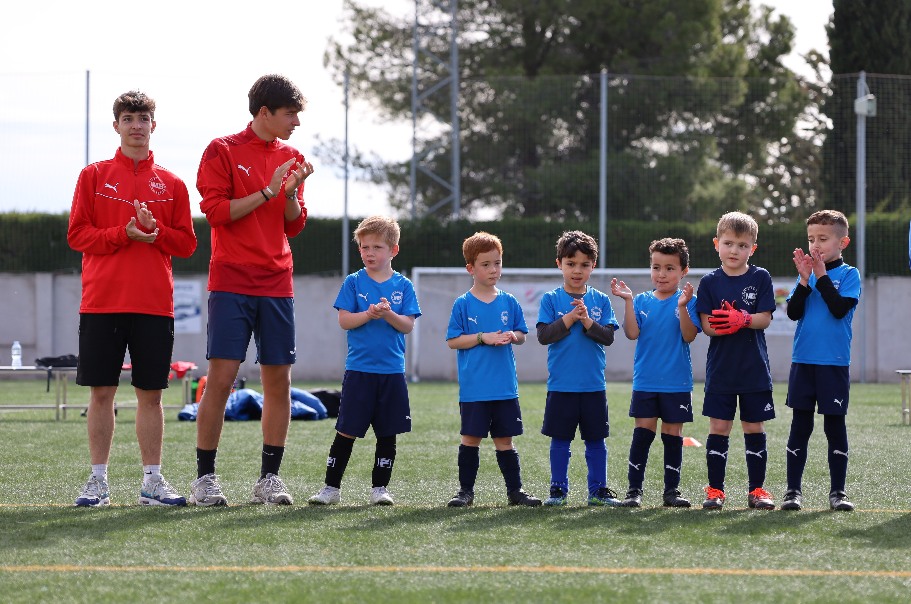
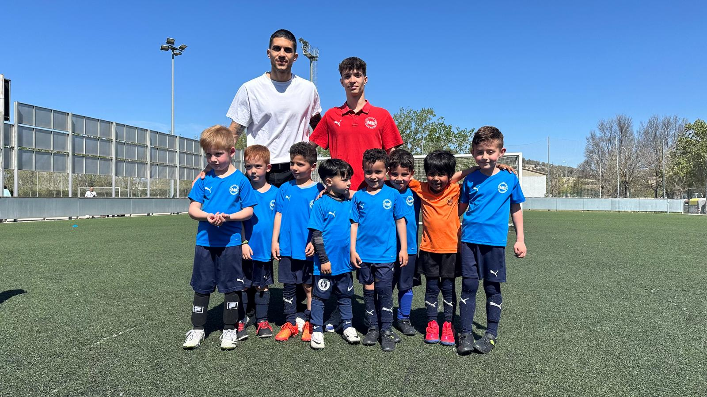
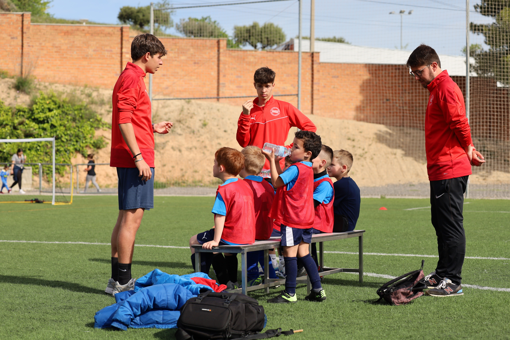

Sobre mí
Hola, mi nombre es Marc, tengo 19 años, nací y vivo en Vilafranca del Penedés, donde también hice mi educación primaria obligatoria y la educación secundaria obligatoria, cada una en escuelas diferentes, mi escuela primaria era Estalella i Graells, mientras que mi escuela secundaria fue Sant Josep. Al acabar la escuela secundaria obligatoria me decidí por hacer un grado medio de SIMIX en Barcelona, en el mismo centro en el que estoy estudiando un grado superior de informática (DAW), en el centro educativo STUCOM, ubicada en Pl. Cataluña en Barcelona, para finalizar, luego de acabar el ciclo superior, empezar a trabajar (lo más probable) o ir a la universidad.
Elegí este grado superior, ya que mi interés es acabar como Desarrollador Web trabajando, creando, modificando y/o mejorando páginas web.
Siempre he sido una persona interesada y apasionada por el mundo informático. Desde bien pequeño me llamaba la atención el cómo se creaban esos sitios en los cuales podía navegar, como una página llevaba a otra mágicamente y estaban interconectadas aparentemente por nada, que era lo que hacía que toda esa información se reuniera en un mismo sitio y como se creaba ese diseño de página web. Debido a eso, mi interés en las páginas web creció y mi admiración por la gente que las creaba también, decidiendo así querer formar parte de este mundo del desarrollo web.
Aparte de este grado informático, me interesé por el grado de multi deportes, ya que siempre he hecho algún deporte desde que tengo memoria, empecé de pequeño haciendo natación y fútbol, pase por atletismo, escalada, castellers, entre otros deportes, gracias a eso mi condición física siempre ha sido apta para poder hacer ejercicio.
A día de hoy ya no juego a fútbol pero me sigue apasiona el deporte, he trabajado como árbitro con niños de 1r a 4r de primaria, he ayudado como monitor en jornadas deportivas, y he trabajado como entrenador de niños de entre 3 a 5 años, por lo que me interesé por ese ciclo medio.
Finalmente, decidí unirme al grado de informática, ya que al igual que siempre he hecho deporte, siempre me he interesado por la informática y programación, mis padres son informáticos y mi hermano también decidió ir por este camino, pero todos se especializaron en ciberseguridad, y como bien he dicho anteriormente, a mí me apasiono la idea de ser desarrollador web, por lo que termine haciendo DAW y no ASIX.
Por lo que estoy aquí por y para aprender. Para eso, me interesaría poder estudiar a la vez que trabajo o hago prácticas, para ganar experiencia real con la cual poder formarme para aprender sobre este mundo, ya no solo en la escuela con prácticas, sino en un entorno de trabajo en el cual pueda aprender con otros y por mí mismo para poder desarrollar mi conocimiento y abarcar todo lo que no sé hasta ahora.
Al ser una de mis primeras veces en este entorno de trabajo me gustaría desarrollar el rol de aprendiz o ayudante de alguien que tenga interés en enseñarme cómo funciona todo, y con el paso del tiempo pasar de aprendiz a trabajador preparado.
Galería de trabajo






Educación
Mi escuela primaria, ubicada en Vilafranca del Penedès, fue la escuela Estalella i Graells, donde estudié y me formé para poder acceder a la ESO y dar paso a unos estudios que me permitirían lograr y conquistar mis objetivos.
En mi escuela secundaria estudié y evolucioné como persona, obteniendo más recursos y experiencia para realizar trabajos escolares para poder llegar a entrar al ciclo al cual me quería dirigir.
En este centro ubicado en Barcelona pude aprender qué es el mundo de la informática, crear máquinas virtuales y conseguir experiencia real con grandes prácticas y trabajar para una empresa.
En grado superior apliqué mis conocimientos anteriores de grado medio en el mundo de la informática y aumenté y mejoré mis conocimientos, focalizándome en el desarrollo de páginas web, con lenguajes como HTML, CSS, PHP, Java, MySQL, Figma, y más.